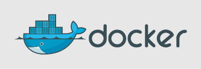
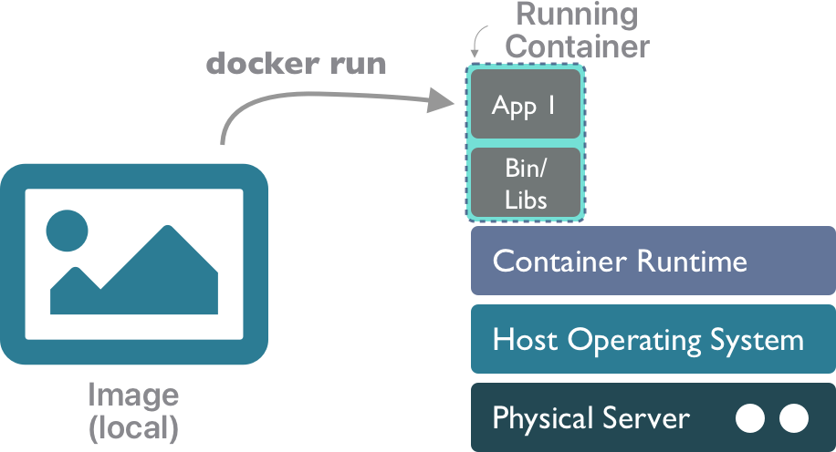
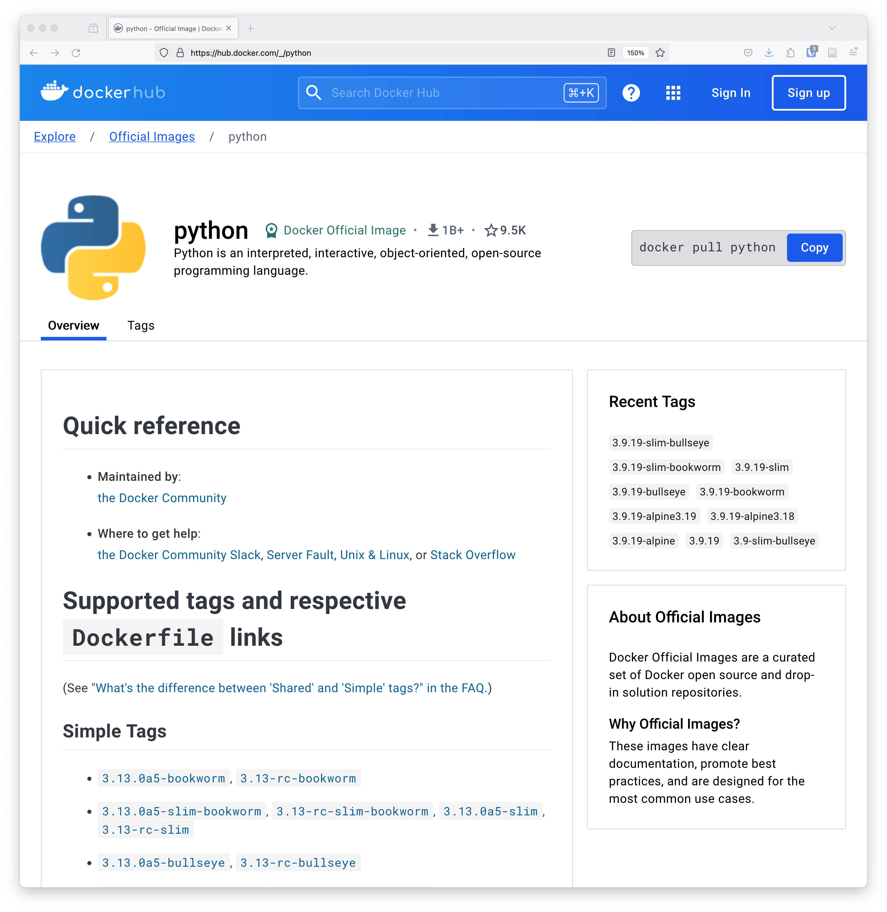
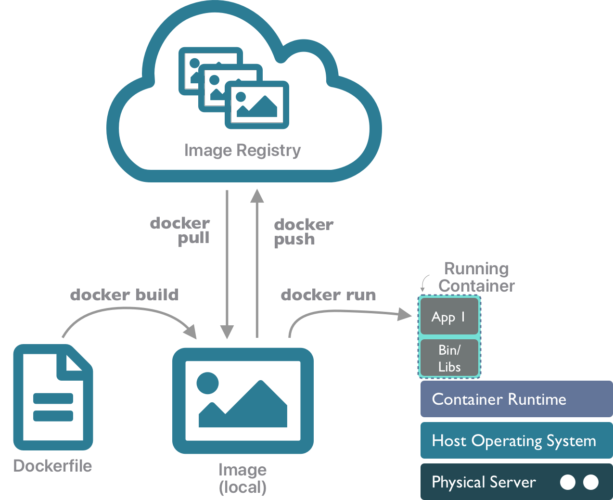

15 Docker Containers
15.1 Learning Objectives
- What is docker anyway?
- Think about dependency management, reproducibility, and software
- Become familiar with containers as a tool to improve computational reproducibility
- Build and run docker containers to create reproducible python environments
15.2 Just what is a container?
And why might I want one? In short, as a very lightweight way to create a reproducible computing environment. Containers have some desirable properties:
- Declarative: The are defined by a clear procedure making it possible to reliably rebuild an identical container in a variety of environments, promototing reproducibility
- Portable: Containers are designed to run on a container runtime which works identically across systems, so you can launch a container from a Mac, Linux, or Windows and get the same output every time
- Lightweight: Containers contain only the exact files and data needed for a specific application, without all of the extra operating system baggage found in virtual machines
- Scalable: Containers can be launched multiple times from their source image, and thus can be horizontally scaled across a compute cluster to parallelize operations
From the following figure, one can see that a container is much more lightweight than both a bare metal server and a virtual machine, in that it contains only the files needed for a specific application.

Images An image is a snapshot of a computing environment. It contains all of the files and data needed to execute a particular application or service, along with the instructions on which service should be run. But it is not executed per se. As a snapshot, an image represents a template that can be used to create one or more containers (each of which is an instantiation of the contents of the image). Images are also built using a layered file system, which allows multiple images to be layered together to create a composite that provides rich services without as much duplication.
Containers A container represents in instance of an image that can be run. Containers are executed in a Container Runtime such as containerd or Docker Engine. Like virtual machines, containers provide mechanisms to create images that can be executed by a container runtime, and which provide stronger isolation among deployments. But they are also more lightweight, as the container only contains the libraries and executables needed to execute a target application, and not an entire guest operating system. This means that applications run with fewer resources, start up and shut down more quickly, and can be migrated easily to other hosts in a network.

The Docker system was one of the first widespread implementations of containers, and its popularity drove much of the terminology around containers. After it’s inception, the software ecosystem around contaianers has been standardized and maintained by the Open Container Intitiative (OCI), which defines the image specification, runtime specification, and distribution specification followed by most vendors. So, we might often use the ‘docker’ terminology, but we are referring to OCI-compliant images and containers.
15.3 Hands-on with Containers and Docker
Let’s get started. At it’s simplest, you can use docker to run an image that somebody else created. Let’s do that with a simple Hello World app. Open a terminal (on a machine with docker installed), and run:
$ docker run hello-worldHello from Docker!
This message shows that your installation appears to be working correctly.
To generate this message, Docker took the following steps:
1. The Docker client contacted the Docker daemon.
2. The Docker daemon pulled the "hello-world" image from the Docker Hub.
(arm64v8)
3. The Docker daemon created a new container from that image which runs the
executable that produces the output you are currently reading.
4. The Docker daemon streamed that output to the Docker client, which sent it
to your terminal.
To try something more ambitious, you can run an Ubuntu container with:
$ docker run -it ubuntu bash
Share images, automate workflows, and more with a free Docker ID:
https://hub.docker.com/
For more examples and ideas, visit:
https://docs.docker.com/get-started/In a nutshell, the docker run command will take an image from your local machine, and execute it as a container instance.

You can manage your local containers and images using the docker client. Start by listing your local images:
$ docker image ls
REPOSITORY TAG IMAGE ID CREATED SIZE
hello-world latest ee301c921b8a 10 months ago 9.14kBAnd you can list the containers that are running. Because containers are somewhat analogous to processes, list them with:
$ docker ps
CONTAINER ID IMAGE COMMAND CREATED STATUS PORTS NAMESThere is no output there, because no containers are currently running. You can see the containers that were run previously by adding the -a (all) option. Only long-running containers will generally be visible with docker ps without the -a flag.
$ docker ps -a
CONTAINER ID IMAGE COMMAND CREATED STATUS PORTS NAMES
f0a2c6c27af7 hello-world "/hello" 12 minutes ago Exited (0) 12 minutes ago nervous_vaughanSo from that listing, we can see the hello-world image (with id f0a2c6c27af7) was run 12 minutes ago. We could run it again with either the container identifier (using docker start -i f0a2c6c27af7), or with the container name, which was assigned automatically (docker start -i nervous_vaughan). Using start, we are running the same container instance (f0a2c6c27af7) as previously, rather than creating a new one (which we could do by calling docker run again).
Once you are finished with a container you can remove the container, but note that the image will still be present locally.
$ docker ps -a
CONTAINER ID IMAGE COMMAND CREATED STATUS PORTS NAMES
f0a2c6c27af7 hello-world "/hello" 22 minutes ago Exited (0) 6 minutes ago nervous_vaughan
$ docker rm f0a2c6c27af7
f0a2c6c27af7
$ docker ps -a
CONTAINER ID IMAGE COMMAND CREATED STATUS PORTS NAMES
$ docker image ls
REPOSITORY TAG IMAGE ID CREATED SIZE
hello-world latest ee301c921b8a 10 months ago 9.14kBSo the image is still on your local machine and could be run again to create a new container anytime.
15.4 How about python?
We’ve been using python 3.10, which is installed on the server. What if you wanted to run a newer version of python? It’s a command away with docker:

$ docker run -it python:3.12
Unable to find image 'python:3.12' locally
3.12: Pulling from library/python
6ee0baa58a3d: Pull complete
992a857ef575: Pull complete
3861a6536e4e: Pull complete
e5e6faea05ea: Pull complete
91c9495e7b5a: Pull complete
9001688a971d: Pull complete
ad27ab4515af: Pull complete
b152d3b07485: Pull complete
Digest: sha256:336461f63f4eb1100e178d5acbfea3d1a5b2a53dea88aa0f9b8482d4d02e981c
Status: Downloaded newer image for python:3.12
Python 3.12.2 (main, Mar 12 2024, 08:01:18) [GCC 12.2.0] on linux
Type "help", "copyright", "credits" or "license" for more information.
>>> print("Hello from python!")
Hello from python!
>>> You can even use this image to run commands at the command prompt. The -i interactive and -t terminal options allow you to run a command interactively with terminal output. Let’s run a quick command to print the python version:
$ docker run -it --rm python:3.12 python -V
Python 3.12.2and we could run a little python command-line calculation from the image:
$ docker run -it --rm python:3.12 python -c 'print(f"Four plus one is {4+1}")'
Four plus one is 5If you were to run commands like this frequently, you’d build up a lot of container instances from your image, so instead we passed the --rm option to tell docker to delete the container (but not the image) when it is done executing each time. So, at times you’ll need to clean up. I’ve run the commands a few times interactively without remembering the --rm option, so now I can list and remove the containers that I don’t need hanging around any more.
$ docker ps -a
CONTAINER ID IMAGE COMMAND CREATED STATUS PORTS NAMES
d3f717354ed5 python:3.12 "python3" About an hour ago Exited (0) 59 minutes ago laughing_borg
e882d6a89f2c python:3.12 "python3" About an hour ago Exited (130) About an hour ago interesting_elgamal
9d984d596e4e python:3.12 "python3" About an hour ago Exited (0) About an hour ago adoring_jang
b015e761fbab hello-world "/hello" 7 days ago Exited (0) 7 days ago compassionate_wozniak
1bf3a36a924c hello-world "/hello" 7 days ago Exited (0) 7 days ago jolly_goldwasser
$ docker rm laughing_borg interesting_elgamal adoring_jang compassionate_wozniak
laughing_borg
interesting_elgamal
adoring_jang
compassionate_wozniak
$ docker ps -a
CONTAINER ID IMAGE COMMAND CREATED STATUS PORTS NAMES
1bf3a36a924c hello-world "/hello" 7 days ago Exited (0) 7 days ago jolly_goldwasser15.5 Exploring available images and versions
Now that version of python is available on your machine. When you list the image, you’ll see that the python version is provided as the tag.
$ docker image ls
REPOSITORY TAG IMAGE ID CREATED SIZE
python 3.12 ff82813aa87b 6 weeks ago 1.02GB
hello-world latest ee301c921b8a 10 months ago 9.14kBThe TAG associated with an image is typically used to indicate the version of the image. We downloaded this image from the DockerHub image registry. If you inspect the DockerHub python page, you’ll see that this is an ‘official’ image from the python project, and that it is one of many different images that can be downloaded. So, images are a fantastic way to be able to reliably return to a specific version of software that you might want to use.
Be careful with images that you download from the internet – they might contain anything, including malware. Because you are running the code locally, you never know mischief might be managed, and you probably don’t want to find out. So it is best to only run images from trusted sources. Generally, the ‘official’ images for projects are marked in image registries, and there are procedures to ensure they are from those trusted sources. But, it’s also easy to spoof something that looks official, so put on your tinfoil hat when running unfamiliar images.

Of course, python is just the start. You can find images for just about any software you need, including machine learning libraries like TensorFlow (tensorflow/tensorflow), databases like Postresql (bitnami/postgresql), search systems like Solr (solr), and web servers like nginx (nginx). Take a few mintues to explore the thousands of applications available at these image registries:
15.6 Build your own images
- what they are and why they are important
- basic structure
- write the simplest one possible “”
- typical structure
15.8 Container lifecycle
Putting it all together, you can use the docker client tool to build an image from a Dockerfile, then run it as a container, and you can push that image to an image registry, or pull one down that you want to run on a particular machine.

15.8.1 Spinning up ubuntu
docker run --name container1 -h myubuntu -it ubuntu:22.04docker rm container1
Shell on running containers - docker exec -it container1 -- bash
15.9 Exercise
- Optional?
15.10 Bonus info: Running containers locally
Working with docker or containers requires a container runtime. If you’re on a Mac or Windows machine, you can run containers through a variety of different runtime systems. One of the nicest lately is Rancher Desktop. Install the binary for you platform, and then after it starts, enter the configuration Preferences, and then deselect “Kubernetes” to disable the kubernetes distribution, which takes up a lot of resources if you’re not using it.

There are many different tools you can use with docker, including the docker client tool, and the containerd ecosystem using nerdctl as a client tool. Both the docker command and the nerdctl command share the same commands. A few quick example commands one might use in the docker ecosystem:
docker pull python:3.9: to grab an existing python image from the DockerHub repositorydocker run -it python:3.9 -- python: to start a standard python interpreterdocker build: to build a new image from a Dockerfile configuration file